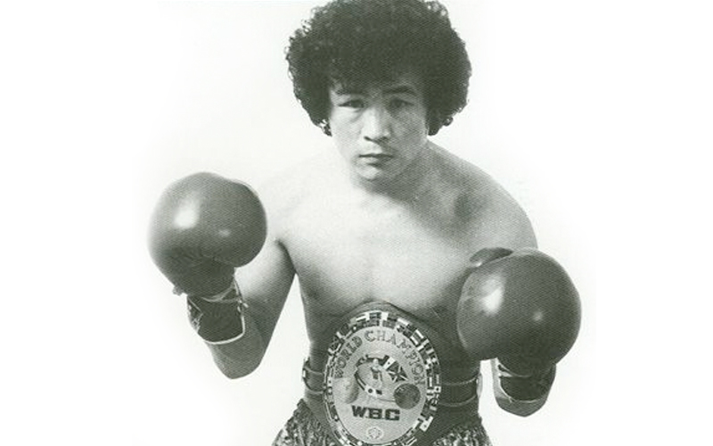

Chang Jung-Koo made his professional debut in 1981, a young and determined boxer from South Korea. Known for his exceptional speed, technical skill, and tenacity, he quickly gained recognition in the light flyweight division. His debut was just the beginning of an impressive career that would see him become a world champion and one of the most feared fighters of his era.
One of Chang Jung-Koo’s most famous fights was his showdown with Rolando Bohol in 1983. In this thrilling contest for the WBA Light Flyweight Championship, Chang's incredible stamina and determination helped him secure the win, showcasing why he was called "The Korean Tiger."
Another highlight in Chang's career came when he faced Humberto González in a legendary bout that demonstrated Chang’s mastery of the ring. Despite being outclassed at times by González, Chang’s resilience allowed him to reclaim the WBA title in an unforgettable performance.
Chang Jung-Koo achieved great success in the light flyweight division, including multiple title defenses and being one of the first fighters to unify the division. He was known for his technical ability and heart in the ring, becoming a two-time world champion during his career. His unmatched work ethic and fighting spirit made him a true legend of the sport.
While Chang’s career was full of success, he faced struggles outside the ring as well. He dealt with injuries, including a severe eye injury that almost ended his career. Despite this, Chang Jung-Koo’s determination and fighting spirit allowed him to return to the ring, achieving even more success after overcoming these challenges.